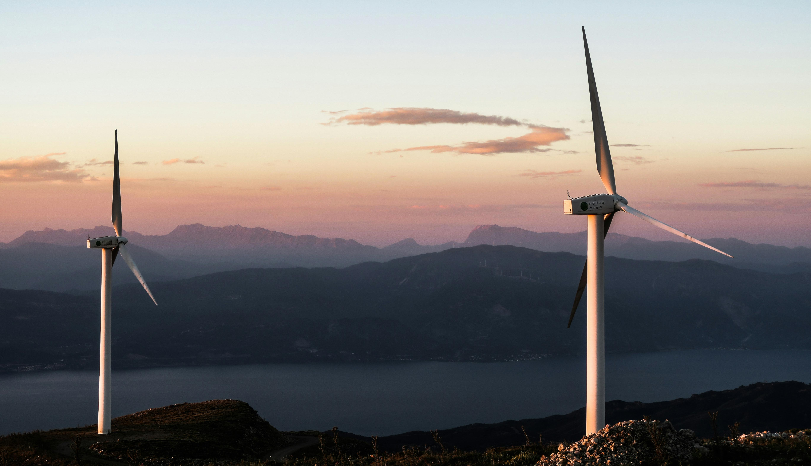

El sol es el primer origen del viento: De por si, brinda una ventaja, y es su nula chance de agotamiento.
Mientras el planeta exista, el viento seguirá soplando, y la energía eólica continuará existiendo. El sol es el primer origen del viento,
por el diferencial de temperatura en las masas del aire. Mientras haya sol, habrá viento.
La materia prima generadora no debe abonarse:
Una vez realizada la inversión inicial, no es necesario pagar por la materia prima generadora. Además, utilizando baterías,
es posible almacenar la energía cinética de este recurso gratuito.
 Se requiere una instalación en sitio, por personal capacitado: Es importante destacar que
gran parte de estos trabajos dependen de si el aerogenerador se fabrica localmente, ya que la instalación solo
cubre una parte de la demanda total, mientras que el mantenimiento de un parque eólico representa una fracción mínima en comparación con las tareas requeridas a lo largo de todo el proceso.
Se requiere una instalación en sitio, por personal capacitado: Es importante destacar que
gran parte de estos trabajos dependen de si el aerogenerador se fabrica localmente, ya que la instalación solo
cubre una parte de la demanda total, mientras que el mantenimiento de un parque eólico representa una fracción mínima en comparación con las tareas requeridas a lo largo de todo el proceso.
La energía eólica es limpia porque no genera residuos ni contamina el medio ambiente: Nada se descarta en la energía eólica; no hay vertidos, interrupciones en los cursos de
agua ni consumo de recursos. Tampoco deja materia prima que termine en basureros o cuerpos de agua. Además, no presenta los riesgos asociados con la energía nuclear o
los combustibles fósiles. Por esto, la energía eólica se considera limpia.

La eficiencia que marca la diferencia en la generación de energía: La eficiencia en la generación de energía eólica supera, en condiciones adecuadas, a la energía solar fotovoltaica. Además, los avances tecnológicos y los costes de escala en la fabricación han contribuido a la reducción de precios, haciendo que la generación de electricidad a partir del viento sea más rentable.
El mito del viento excesivo en la energía eólica: Contrario a lo que se cree, zonas de vientos excesivos no resultan beneficiosas para la
energía eólica. Este tipo de energía requiere vientos regulares, a velocidades medias y constantes. Por eso es que puede ser implementada a pequeña, mediana o gran escala
siempre que el lugar sea apto. La fuerza del viento debe ser pareja
Viento que genera energía sin contaminar:
La energía eólica no emite gases de efecto invernadero, ya que no depende de procesos de quema o combustión. Esto la convierte en una fuente de energía limpia
y sostenible, que contribuye significativamente a la reducción de la huella de carbono y al combate del cambio climático.